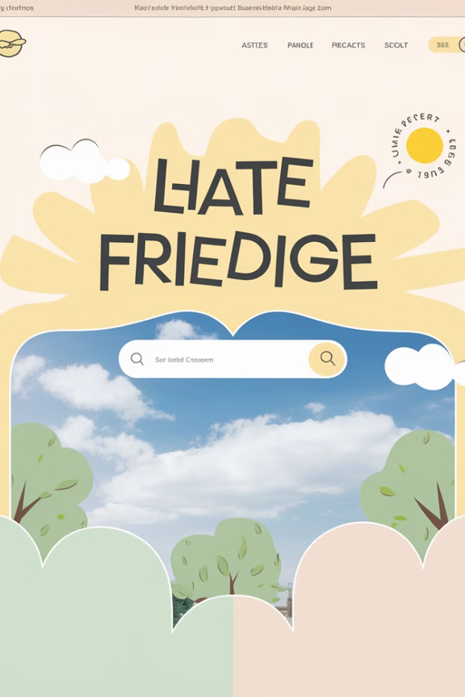

Dalam merancang navigasi yang efektif, terdapat beberapa prinsip utama yang perlu diperhatikan:
-
Navigasi yang Mudah :
Memudahkan pengguna menemukan materi atau fitur yang mereka cari.
-
Daya Tarik Visual :
Desain yang menarik membuat pengguna betah menjelajah situs.
-
Identitas dan Tujuan :
Memberikan informasi jelas tentang fungsi situs dan konten yang tersedia.
-
Orientasi Pengguna :
Pengguna dapat dengan cepat memahami cara menggunakan situs.